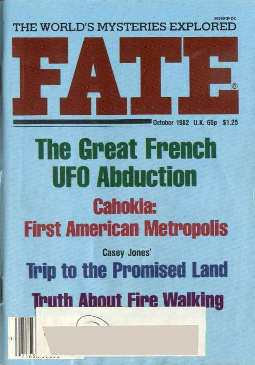

Couverture du n° de Fate ce mois-ci,
titrant sur Le grand enlèvement français en ovni

Le Dr. Brain(Brian?) T. Clifford du Pentagone annonce à une
conférence de
presse qu'un contact entre citoyens américains et des extra-terrestres à bord de leur véhicules serait strictement illégalThe Star, New York, 5 octobre 1982.
Les soviétiques lancent la première série de satellites Glonass, système équivalent au
GPS.
A Groom Lake, début des tests de validation de
l'Air Force sur le 2nd model de production du F-117A Rich, B.: Skunk Works, 1994.
A Ecueille, Indre, 3 témoins voient durant quelques
s le passage de 1 boule très lumineuse se déplaçant très rapidement. Cette boule blanche au départ a une traînée
et vire au rouge avant de disparaître Cette observation présente toutes les caractéristiques d'une rentrée atmosphériqueGEPAN: PAN classé B.